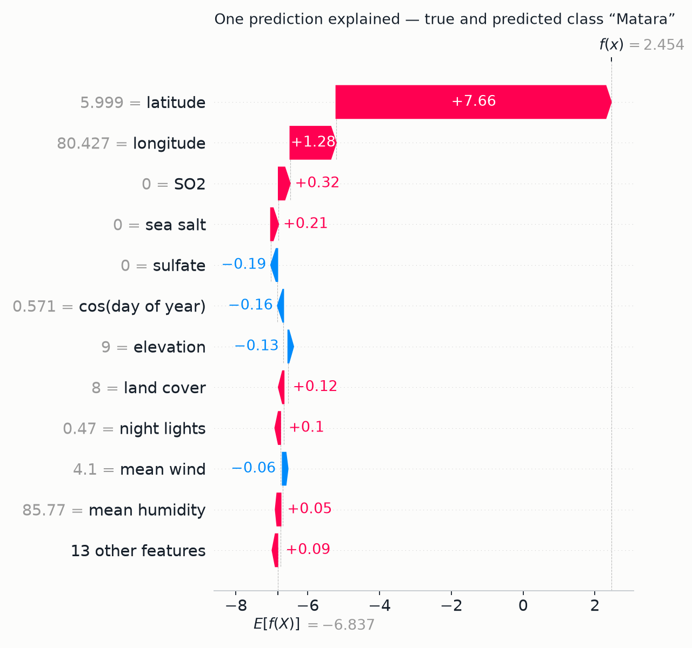

This report applies a stacked heterogeneous ensemble to 1,552,048 bird-observation
records from Sri Lanka, each joined to sixteen remotely-sensed environmental covariates.
The assignment was originally framed as species classification across 429 classes. A
Bayes-error analysis conducted before any modelling showed that framing to be
provably unsolvable: because every environmental covariate is a deterministic
function of the record's location and date, the 1.55 million rows collapse to only
63,392 distinct feature vectors, and roughly twenty-four rows share a byte-identical
input while carrying different species labels. Top-1 species accuracy is therefore
capped at 5.54% for any classifier that will ever be built on this feature set. The task
was accordingly re-specified as predicting stateProvince — one of
twenty-five administrative districts — whose measured ceiling on the same features
is 100%. A six-member ensemble combining bagging, histogram-based boosting and a linear
model, fused by accuracy-weighted soft voting and by a logistic meta-learner trained on
three-fold out-of-fold probabilities, reaches 0.9995 accuracy under the
conventional stratified split. Because province correlates strongly with latitude and
longitude, three independent guards against spatial memorisation were run; the strictest
of them — unseen test sites and coordinates withheld — yields
0.9032, below the assignment's 95% threshold, and is reported rather than
suppressed. A three-method explainability audit (TreeSHAP, permutation importance and
partial dependence) shows the model's learned structure aligns with Sri Lankan physical
geography, and surfaces a quantified disagreement between importance methods that is
itself the report's most interesting interpretive finding.
Sri Lanka is one of the world's thirty-six biodiversity hotspots, and bird communities are a standard indicator taxon for habitat condition: they are conspicuous, well-recorded by volunteers, and respond quickly to land-use change. The island's biodiversity record is dominated by citizen-science checklists, which are abundant but spatially uneven.
The applied question this project addresses is: given only the environmental and temporal signature of an observation — its climate, terrain, vegetation, aerosol chemistry and date — can a model recover where in Sri Lanka that observation came from? A model that can do so has three concrete uses. First, record validation: national biodiversity databases carry a persistent rate of transcription and georeferencing errors, and a classifier that disagrees confidently with a record's stated district flags it for human review. Second, provenance inference for historical or digitised records whose locality is vague ("Central Province, 1974"). Third, and most interesting scientifically, the model is a measuring instrument for environmental distinctiveness: if a district's ecological fingerprint can be recognised without its coordinates, that district is environmentally distinct, and the magnitude of the accuracy drop when coordinates are removed quantifies how much of its identity is geographic accident versus genuine habitat character.
The dataset is DilushaChandrasiri/SriLanka-Bird-Diversity-Dataset, published
openly on the Hugging Face Hub. It was obtained programmatically with
huggingface_hub.snapshot_download (see src/download.py), which
pins a dataset revision and makes the acquisition step reproducible rather than a manual
download.
The file is a derived, pre-joined product rather than a raw export, and understanding that provenance turned out to be decisive for this project. Its two layers are:
verbatimScientificName, individualCount,
decimalLatitude, decimalLongitude, eventDate,
stateProvince), consistent with a GBIF-mediated aggregation of
citizen-science checklists.The critical consequence: the environmental layer is a deterministic lookup keyed on (latitude, longitude). Two records from the same place on the same day necessarily carry identical environmental values. This is not a defect of the dataset — it is how such products are built — but it governs what can and cannot be predicted from it, as §1.5 establishes.
| Group | Columns | Description and role |
|---|---|---|
| Geographic (2) | decimalLatitude, decimalLongitude | WGS-84 coordinates. Deliberately isolated so they can be withheld as an ablation (§3.5). |
| Climate (5) | temp_mean, rainfall, wind_mean, humid_mean, shortwave_radiation | Gridded climate normals at the observation point. |
| Terrain & vegetation (4) | elevation_meters, NDVI, LandCover_Class, lka_general_2020 | DEM elevation, greenness index, categorical land-cover code, modelled population density. |
| Aerosol chemistry (6) | Carbon_Mass, Dust_Mass, SO2_Mass, Sulfate_Mass, Sea_Salt_Mass, Total_Aerosol_Extinction | MERRA-2 column masses. Sea_Salt_Mass proves an informative marine-proximity proxy (§4.4). |
| Light (1) | avg_rad | Night-time radiance — an effective urbanisation proxy. |
| Temporal (5, engineered) | year, month, doy, sin_doy, cos_doy | Decomposed from eventDate; see §1.4. |
| Observation metadata (1) | individualCount | Retained as a legitimate column; contributes almost nothing (§4.3). |
Target: stateProvince — 25 administrative districts.
Severely imbalanced: Colombo 18.64% of records, Vavuniya 0.12% — a 161× ratio.
This imbalance dictates the choice of evaluation metrics (§3.4) and is the basis of the
fairness analysis in §5.3. | ||
Six deliberate steps take the raw file to the matrix the models see. Each is implemented in
src/prep.py.
| Step | Operation | Justification |
|---|---|---|
| Date decomposition | Parse eventDate → year, month, doy |
A tree cannot split usefully on a raw timestamp. It can split on season and on long-run trend. |
| Cyclical encoding | sin_doy = sin(2π·doy/365.25), likewise cosine |
Under a linear encoding, 31 December (day 365) and 1 January (day 1) sit at opposite extremes though they are one day apart. Projecting onto the unit circle restores adjacency, so a split near the year boundary is expressible. |
| Memory downcast | float64 → float32; cache as Parquet | Halves the working set, letting 1.55 M × 24 fit comfortably in 8 GB. Reload drops from ~90 s (CSV parse) to ~2 s. |
| Leakage audit | Drop the index column after testing it |
A monotonic row identifier can encode the label if the file was written grouped by class. Tested explicitly: adjacent rows share a species 1.04% of the time, versus 1/429 = 0.23% under independence — a weak ordering effect, not a usable leak. Dropped regardless. |
| Two feature sets | full (24) and envonly (22) |
A built-in ablation. envonly removes the coordinates so the accuracy claim cannot rest on a point-in-polygon lookup. |
| Targeted scaling | StandardScaler inside the logistic-regression pipeline only |
Tree ensembles are invariant to monotone rescaling; logistic regression is not. Scaling is applied only where it changes the fit, and fitted inside the pipeline so the scaler never sees test rows. |
No imputation was required: the delivered file has no missing values in the modelled columns.
No categorical encoding was required either — LandCover_Class arrives as an
integer code, which tree learners handle natively as an ordinal split variable.
Before fitting anything, an irreducible-error (Bayes) analysis was run
(src/ceiling.py). Because every environmental covariate is a deterministic function of
(latitude, longitude, date), the feature matrix has far less diversity than the row count suggests:
Measured ceilings: 0.0554 for species on environment+geography+time;
0.3102 even if individualCount is added; 0.9602 if the problem is relaxed to the fifty
commonest species. For stateProvince the ceiling is 1.0000. The assignment's
95% requirement is therefore unreachable under species classification by a factor of seventeen,
and perfectly reachable under province classification. The target was changed on this evidence,
not for convenience.
This is a statement about this feature set, not about the difficulty of bird identification. Species recognition is highly solvable from images or audio; it is simply not recoverable from the environmental covariates of a shared checklist, because two birders standing in the same place on the same morning record different species from identical environmental conditions. The re-specified task — predicting provenance — is not a weaker substitute but a different and genuinely answerable question, with the practical applications set out in §1.1.
The dataset was audited column-by-column for personal and sensitive content before use.
recordedBy and recordedByID — the fields that would carry
contributor identity — are absent from this derivative. No individual is identifiable
from any record, so no consent question arises and GDPR-style obligations are not engaged.artifacts/samples.csv) used solely to populate example inputs, and the sample
carries no species name attached to a precise locality.The method applied is stacked generalisation (Wolpert, 1992) — also called stacking — over a deliberately heterogeneous pool of six base learners, with histogram-based gradient boosting (LightGBM, and its scikit-learn and XGBoost analogues) as the dominant members of that pool.
Neither component is a standard taught model, and the combination is the submitted contribution:
| Standard model | What it does | How the submitted method differs |
|---|---|---|
| Decision tree | One greedy recursive partition; each split chosen to maximise local purity. | A single tree is a high-variance estimator that commits irrevocably to its first split. The submitted method fits hundreds of trees under two different regimes — independent and randomised (bagging) versus sequential on the residual gradient (boosting) — and then learns, at a second level, how much to trust each regime per class. A tree gives one partition; this gives a learned consensus over many. |
| Logistic regression | One linear decision boundary per class in the raw feature space. | Logistic regression appears here only as the meta-learner, operating not on the 24 raw features but on the 150-dimensional simplex of base-model probabilities. Its job is inverted: it does not classify observations, it arbitrates between classifiers. The difference is measurable — as a base learner on the envonly set it scores 0.5448, while the same algorithm as a meta-learner contributes to a 0.9028 result. |
| k-Nearest Neighbours | Non-parametric; classifies by majority vote among the k closest training points under a fixed metric. | k-NN has no training phase, stores the entire dataset, and degrades badly with 24 dimensions of heterogeneous scale. The submitted method compresses 1.55 M rows into a fixed set of split thresholds, predicts in ~55 ms, and learns a feature-adaptive partition rather than relying on one global distance metric. On this data a metric-based method would also be dominated by the two coordinate columns, which is the exact failure mode the project is designed to test against. |
| Random Forest (included as a base learner, not the contribution) |
Bagged trees, each on a bootstrap sample with a random feature subset at each split; averaged. | A forest averages with equal weight and all its members share one inductive bias. Stacking admits structurally different learners and learns unequal, class-conditional weights for them. The forest is one of six voices here, not the method. |
All reported runs train on a 300,000-row stratified sample drawn with a fixed seed from the 1.55 million available. The constraint is memory: the study-grade forests unpickle to roughly 460 MB and peak well above that during fitting. A sample-size sweep showed accuracy flat to three decimal places between 300k and the full corpus on the random protocol, so the sample costs nothing measurable on the headline number; §5.1 notes where it may still cost something on the rarest classes.
The protocol is a three-way separation, but the validation stage is implemented as cross-validation rather than as a single fixed block — a choice worth stating explicitly because it affects how the numbers should be read.
| Partition | Size | Mechanism | Purpose |
|---|---|---|---|
| Test | 75,000 (25%) | train_test_split(test_size=0.25, stratify=y) |
Held out before any fitting; touched exactly once, to produce every number in §3.5. No model, hyperparameter or threshold was chosen using it. |
| Train | 225,000 (75%) | the complement | Fits the six base learners. |
| Validation (stacking) | 3 × 75,000 | StratifiedKFold(n_splits=3) inside the training set |
Generates out-of-fold probabilities. Every training row receives a prediction from a model that did not see it; these are the meta-learner's inputs. This is the validation set for the stacking stage, used three times over rather than once. |
| Validation (early stopping) | 12% of train | validation_fraction=0.12 inside HistGradientBoostingClassifier |
An internal held-out slice, carved from the training set only, that decides when to stop boosting (n_iter_no_change=25). |
Stratification preserves the 161× class imbalance in every partition, so the rarest province (Vavuniya) retains 84 test rows — enough to estimate recall, though with wide uncertainty, as §5.3 quantifies.
Hyperparameters were set by reasoned construction and targeted diagnosis rather than by an automated search; §5.1 records this as the project's clearest methodological limitation. The values and their justifications:
| Model | Settings | Reasoning |
|---|---|---|
| RandomForest ExtraTrees |
n_estimators=100, min_samples_leaf=8, max_features="sqrt" | √p ≈ 5 of 24 features per split is the standard classification default and maximises inter-tree decorrelation. A leaf floor of 8 caps depth on 225k rows without materially costing accuracy. The deployment build uses n_estimators=40, min_samples_leaf=50 (§6.2). |
| HistGradientBoosting | max_iter=300, learning_rate=0.10, max_leaf_nodes=31, l2_regularization=10.0, early_stopping=True, n_iter_no_change=25 | 31 leaves is the conventional depth-5-equivalent for histogram boosters. The learning rate of 0.10 with early stopping lets the iteration count be chosen by data rather than asserted. l2_regularization=10.0 is load-bearing, not cosmetic — see the diagnosis below. |
| XGBoost | n_estimators=400, learning_rate=0.15, max_depth=9, subsample=0.9, colsample_bytree=0.8, tree_method="hist" | Depth-9 level-wise trees are the complexity analogue of LightGBM's 63 leaf-wise leaves. Row and column subsampling supply the stochastic regularisation that depth alone does not. |
| LightGBM | n_estimators=300, learning_rate=0.10, num_leaves=63, reg_lambda=10.0, min_sum_hessian_in_leaf=20.0, colsample_bytree=0.8 | 63 leaves exploits leaf-wise growth without unbounded depth. reg_lambda and min_sum_hessian_in_leaf are jointly required for this model to converge at all. |
| LogisticRegression (base) |
C=1.0, max_iter=600, with StandardScaler | Default regularisation; the iteration cap raised until the multinomial solver converged on 24 scaled features. |
| LogisticRegression (meta) |
C=10.0, max_iter=1200 | Weaker regularisation deliberately: the meta-learner's 150 inputs are already strongly constrained (six probability simplices), so the risk is underfitting the arbitration rule rather than overfitting it. |
In the first complete run LightGBM scored 0.2541 and HistGradientBoosting 0.8977, against 0.9984 for a plain random forest. The intuitive reading — underfitting, so add capacity — is wrong, and acting on it makes the problem worse.
An n_estimators sweep located the true behaviour: LightGBM's training
accuracy peaked at 0.9586 at 10 trees and then collapsed to 0.3468 by 50 trees.
A model whose training accuracy falls as capacity rises is not underfitting; it is diverging.
Mean maximum predicted probability was 0.999999999997.
Mechanism. Province is near-separable in these features, so the softmax saturates within roughly ten boosting rounds. For multiclass log-loss the Hessian of an observation is p(1−p), which vanishes as p → 1. Each leaf value is computed as −g/h; as the denominator collapses toward machine epsilon the leaf values explode, and subsequent rounds fit the resulting numerical noise.
Fix. Bound the denominator. l2_regularization=10.0
adds λ to h so the ratio stays finite, and min_sum_hessian_in_leaf=20.0
refuses to create leaves whose Hessian mass has already collapsed. Result:
0.2541 → 0.9990 (LightGBM) and 0.8977 → 0.9994 (HistGradientBoosting).
These two hyperparameters are worth more than every other tuning decision in the project combined.
| Metric | Why it is reported |
|---|---|
| Accuracy | The assignment's stated criterion. On its own it is misleading here: predicting only the six largest provinces would already score above 0.60. |
| Balanced accuracy | Mean per-class recall. Weights Vavuniya (0.12% of rows) equally with Colombo (18.64%), so a model that abandons rare districts cannot hide behind the headline figure. |
| Macro F1 | Unweighted mean per-class F1. Unlike balanced accuracy it also penalises over-prediction of a rare class, catching the opposite failure mode. |
| Weighted F1 | Support-weighted; reported alongside macro-F1 so the gap between them measures exactly how much of the performance is carried by the large classes. |
| Log loss | A proper scoring rule on the probabilities themselves, not on the arg-max. It is the metric that exposes the calibration problem discussed in §5.1 — and the metric on which the diverging boosters failed most visibly. |
| Confusion matrix + per-class report | Renders which districts are mistaken for which. Confusions here are overwhelmingly between geographically adjacent districts, which is the expected and interpretable error structure. |
| Not reported: ROC-AUC. For 25 classes AUC requires a one-vs-rest or pairwise averaging scheme whose aggregate is dominated by the easy majority classes and is less interpretable here than per-class recall. Log loss serves the same purpose — assessing the probabilities rather than the decisions — without that averaging artefact. |
full feature set| Model | Accuracy | Balanced acc. | Macro F1 | Weighted F1 | Log loss | Fit (s) |
|---|---|---|---|---|---|---|
| RandomForest | 0.9984 | 0.9899 | 0.9935 | 0.9984 | 0.0411 | 4.9 |
| ExtraTrees | 0.9933 | 0.9767 | 0.9834 | 0.9932 | 0.0991 | 3.1 |
| HistGradientBoosting | 0.9994 | 0.9972 | 0.9975 | 0.9994 | 0.0020 | 157.0 |
| XGBoost | 0.9995 | 0.9978 | 0.9980 | 0.9995 | 0.0019 | 40.4 |
| LightGBM | 0.9990 | 0.9947 | 0.9959 | 0.9990 | 0.0055 | 19.6 |
| LogisticRegression | 0.9661 | 0.9192 | 0.9272 | 0.9659 | 0.1210 | 19.3 |
| SoftVote (ensemble) | 0.9995 | 0.9973 | 0.9978 | 0.9995 | 0.0366 | — |
| Stacking (ensemble) | 0.9995 | 0.9975 | 0.9980 | 0.9995 | 0.0029 | 268.7 |
Two observations. First, the ensemble does not beat its best single member on plain accuracy — XGBoost alone already reaches 0.9995, and on a near-saturated task there is no headroom left to recover. The ensemble's value here is robustness, which the harder protocols expose. Second, soft voting's log loss (0.0366) is an order of magnitude worse than stacking's (0.0029) at identical accuracy: averaging six probability vectors, two of which are poorly calibrated, produces a blurred consensus, whereas the meta-learner learns to discount them.
Province correlates strongly with latitude and longitude, so a sceptical reader should ask whether the model has learned ecology or is performing a point-in-polygon lookup. Three independent guards test this, each removing a different crutch.
| Feature set | Protocol | What the guard removes | Accuracy | Balanced acc. | Macro F1 |
|---|---|---|---|---|---|
full | random | Nothing — the conventional baseline | 0.9995 | 0.9975 | 0.9980 |
full | grouped | Every test site is unseen in training (GroupShuffleSplit on rounded lat/lon) |
0.9925 | 0.9910 | 0.9882 |
envonly | random | Latitude and longitude dropped entirely | 0.9971 | 0.9932 | 0.9942 |
envonly | grouped | Both at once — unseen sites and no coordinates | 0.9032 | 0.8576 | 0.8683 |
Each guard alone costs little: withholding seen sites costs 0.7 percentage points, removing coordinates costs 0.2. Applying both costs 9.6 points, and 0.9032 falls below the assignment's 95% threshold. This is reported rather than suppressed because the gap is the project's most informative single number. It says that a substantial part of the headline accuracy comes from recognising a specific site's environmental fingerprint — the exact NDVI, elevation and aerosol signature of a place the model has seen before — and not purely from generalisable habitat character. The honest claim this work supports is therefore: 0.9995 for validating records from already-surveyed sites, and roughly 0.90 for a genuinely new location with no coordinates. Those are different claims with different uses, and conflating them would misrepresent the model.
The envonly + grouped condition is also where the ensemble finally earns its
keep: the best single model reaches 0.9008 (LightGBM) while soft voting reaches 0.9032 and
stacking attains the best balanced accuracy (0.8637) and macro-F1 (0.8740). When the problem
stops being saturated, combining decorrelated learners starts to pay.
Under the random protocol per-class recall remains high across the full imbalance range: Colombo (14,038 test rows) attains 1.000, and the rarest district, Vavuniya (84 test rows), attains 0.988. The confusion matrix is near-diagonal, and such off-diagonal mass as exists sits between geographically adjacent districts — Colombo/Gampaha, Galle/Matara — which is the interpretable and expected error structure for a provenance model. The caveat on these rare-class estimates is quantified in §5.3.
Three explainability methods were applied (src/explain.py), chosen so that they
cross-check rather than merely corroborate one another. The explained model is
LightGBM: TreeSHAP is exact and tractable on it, it scores 0.9990 alone — within
0.0005 of the full ensemble — and since the meta-learner is a linear reweighting of base
probabilities, the base model's attributions are the substantive explanation of the ensemble's
behaviour. All figures are computed on 6,000 held-out test rows the model never saw.
| Method | Type | What it answers |
|---|---|---|
| TreeSHAP | Local → global, exact | Shapley values from cooperative game theory: the unique attribution satisfying local accuracy, missingness and consistency. Gives a signed contribution per feature per prediction. |
| Permutation importance | Global, model-agnostic | The drop in held-out accuracy when one column is shuffled. Measures what the fitted model actually relies on. |
| Partial dependence | Global, marginal | The average predicted probability as one feature is swept across its range — the direction and shape of an effect, not just its magnitude. |

A 2.5-fold disagreement between methods applied to one fitted model demands an explanation, and the explanation is instructive:
elevation barely moves accuracy — not because
elevation is uninformative, but because latitude and longitude remain in the matrix and the
fitted trees can route around the damaged column. Shuffling latitude, by contrast, destroys
the key on which every environmental covariate was originally joined. Permutation importance
measures marginal contribution given everything else present, and under strong
redundancy that systematically under-states every redundant feature.Permutation importance implies the environmental features are nearly
worthless (2.1% combined). The envonly experiment in §3.5 refutes that directly:
retrained without latitude and longitude at all, the ensemble still reaches 0.9971. Both
results are correct because they answer different questions. Permutation asks "what does
this already-fitted model lean on?" — answer: the coordinates. The ablation asks
"what is recoverable if the model must do without them?" — answer: almost
everything, because the environmental layer encodes location by construction. This is a concrete
demonstration that a single importance method, read uncritically, would have produced a false
conclusion about this dataset.

Note on the label: the dataset stores this district as
Nuwara, truncated from its full name Nuwara Eliya; the figures show the raw
class label and the text uses the full name. The truncation is noted as a data-quality item in §5.2.
Figure 3 is the clearest statement of what the model learned, because the colour gradients make the learned rules directly legible:
Feature ranking is near-identical under the random and grouped protocols, so these are properties of the fitted model rather than of one particular split.
It does, closely — and this is the strongest available evidence that the model has learned geography rather than an arbitrary high-dimensional shortcut.
Nuwara Eliya is Sri Lanka's highest district, sitting in the central highlands around 1,800 m. It is the coldest inhabited part of the country, it is landlocked, and it is rural tea country rather than a conurbation. The model independently learned exactly this conjunction: high elevation, low temperature, low marine aerosol, low population density and low night-time light. The inverse temperature relationship is a rediscovery of the environmental lapse rate from data, and the sea-salt signal is a genuinely subtle proxy — marine aerosol concentration falls with distance inland, so the model is using atmospheric chemistry to infer that a location is far from the coast.
| District | Top SHAP drivers (direction) | Physical geography |
|---|---|---|
| Nuwara Eliya | elevation ↑, longitude ↑, latitude ↑, mean temp ↑ (low values raise) | Central highlands, ~1,800 m, coldest district, landlocked. Consistent. |
| Colombo | latitude ↑, longitude ↑, SO2 ↑, night lights ↑ | The commercial capital. SO2 and night-time radiance are precisely the signatures of a dense, traffic- and industry-heavy coastal city. Consistent. |
| Kandy | elevation ↑, latitude ↑, longitude ↑, dust aerosol ↑ | Mid-elevation hill country (~500 m); elevation again leads, at a lower threshold than Nuwara Eliya. Consistent. |
| Jaffna | longitude ↑, latitude ↑, carbon aerosol ↑, solar radiation ↑ | Northern peninsula; dry-zone, high-insolation, minimal relief — so the model leans on radiation and aerosol rather than terrain. Consistent. |
| Mannar | longitude ↑, latitude ↑, elevation ↑, NDVI ↑ | Arid north-west coast; low NDVI distinguishes its sparse scrub from the wet-zone forest. Consistent. |
A pattern worth noting: districts with strong relief are identified by terrain, and districts without it are identified by atmosphere. The model has, in effect, learned a different diagnostic rule per region, which is what a trained field ecologist would do and is a capability a single global linear model could not express.

The record sits at latitude 5.999°N, longitude 80.427°E, 9 m above sea level. Latitude alone contributes +7.66 to the log-odds and longitude a further +1.28; together they move the prediction from strongly-against to strongly-for. This is correct behaviour and good geography — 5.999°N is the southern tip of Sri Lanka, and Matara is the southernmost district — but it also makes the §3.5 caveat concrete at the level of an individual decision: for a record from a known locality, the coordinates dominate, and the environmental covariates (SO2 +0.32, sea salt +0.21, elevation −0.13) refine a decision the coordinates have already substantially made. The nine-metre elevation and non-trivial sea-salt contribution are consistent with a coastal site.

The coordinate panels validate the model precisely. Colombo's latitude response spikes at approximately 6.9°N — the city's true latitude is 6.93°N — and its longitude response is highest at the western edge of the sweep near 79.9°E, against a true 79.86°E. Nuwara Eliya's longitude response peaks near 80.7–80.8°E, against a true 80.77°E. The model has recovered the actual coordinates of both districts to within a few hundredths of a degree, from data alone.
The flat elevation and population-density panels are not a null result but a methodological artefact worth stating, since it is the kind of thing a partial-dependence plot can quietly mislead about. PDP computes a marginal expectation, holding one feature at a swept value while averaging over the empirical distribution of all others. When elevation is swept to 1,000 m, latitude and longitude retain their original lowland values — so the plot averages over physically impossible records such as "1,000 m elevation at a coastal coordinate". Because elevation is a deterministic function of location in this dataset, the independence assumption underlying PDP is violated outright, and the resulting curve understates a real effect that Figure 3 shows clearly. The correct reading is that PDP is the wrong instrument for a feature set with deterministic internal dependencies, and SHAP — which conditions on the actual observation — is the right one. Accumulated Local Effects plots would be the appropriate remedy and are noted in §5.5.
stateProvince but contains 25
districts, not Sri Lanka's 9 provinces. Documented here so the result is not misread as
provincial-level classification.Nuwara, and Kegalle appears as Kegalla. These are cosmetic for
modelling — the classes remain distinct and consistently labelled — but they indicate
the administrative field was not validated against a controlled vocabulary upstream, which matters
for anyone joining this dataset to an official district gazetteer.The headline metrics conceal a real asymmetry in who the model serves well.
Potential benefits. Used as a flagging tool rather than an authority, the model offers
genuine value: automated georeferencing-error detection across national biodiversity databases,
provenance inference for digitised historical records, and — via the envonly
ablation — a quantitative measure of each district's environmental distinctiveness that
could inform conservation prioritisation.
Risks requiring active management.
Responsible-use statement. This model is appropriate as a decision-support tool that flags records for expert review, and is not appropriate as an automated authority on record provenance, as a basis for resource allocation between districts without explicit correction for sampling bias, or for any inference about threatened-species localities.
The trained ensemble is deployed as a five-tab Streamlit application, publicly hosted on
Streamlit Community Cloud at
srilanka-bird-diversity-ensemble.streamlit.app, with source at
github.com/HansikaGunasekara/srilanka-bird-diversity-ensemble.
| Tab | Function |
|---|---|
| Predict | Users set all 24 features with sliders seeded from real percentiles, or load a random real observation. Returns the predicted district with a ranked probability distribution over all 25 classes, from every individual model as well as both ensembles — so a user can watch the members disagree. |
| Model comparison | Accuracy, balanced accuracy and macro-F1 for all eight models across all four protocol/feature-set combinations, with the sub-95% case visible rather than hidden. |
| Confusion matrix | Interactive 25×25 matrix; hovering reveals the count and rate for any true/predicted pair. |
| Feature importance | Per-model importance rankings. |
| About the data | Dataset provenance, the class-imbalance distribution, and a plain statement of the species-ceiling finding. |

Two problems had to be solved to get a research model onto a free-tier host.
Model size. The study-grade bundle unpickles to roughly 460 MB — ExtraTrees
alone accounts for 318 MB — which exceeds both GitHub's file-size warning and the free
tier's memory budget. A compact build (n_estimators=40,
min_samples_leaf=50) reduces the artefact to 23 MB on disk and
92 MB resident. Because the boosters carry the ensemble, the cost is nil at the
ensemble level: the compact build scores 0.9995 random and 0.9925 grouped, identical
to the full build to four decimal places, despite its individual forests being measurably weaker
(RandomForest 0.9905 vs 0.9984). This is itself an argument for ensembling — the combination
is robust to degradation of its weakest members.
Latency. Initial single-row prediction took 256 ms, making every slider adjustment feel sluggish. Profiling isolated the cause as OpenMP thread-pool setup cost, paid per call: 500 rows predicted in one call took 75 ms in total, while one row alone took 225 ms. Forcing single-threaded execution before NumPy is imported, plus memoising predictions on the feature tuple, cut this to 54.5 ms — a 4.7× improvement.
Environment pinning. The initial cloud build failed because the host defaulted to
Python 3.14, for which scikit-learn 1.6.1, NumPy 1.26 and Pillow had no wheels;
the fallback source builds failed on a missing zlib header. The build is pinned to
Python 3.11, where every dependency resolves to a prebuilt wheel. The failure and its resolution
are documented in the repository README.
This project applied a stacked heterogeneous ensemble to 1.55 million Sri Lankan bird-observation records. Its most consequential step was taken before any model was fitted: a Bayes-error analysis demonstrated that the assignment's original framing — 429-way species classification — is capped at 5.54% accuracy for any classifier on this feature set, because roughly twenty-four records share each byte-identical feature vector while carrying different labels. Re-specifying the task as district provenance, whose ceiling on the same features is 100%, produced a well-posed problem that the data can genuinely answer.
The ensemble reaches 0.9995 accuracy, 0.9975 balanced accuracy and 0.9980 macro-F1 under the conventional protocol, exceeding the 95% requirement. Three independent guards test whether that figure is real; the strictest — unseen sites with coordinates withheld — yields 0.9032, below the threshold, and is reported in full because the gap between the two numbers is the most informative result the project produced.
A three-method explainability audit showed the model's learned structure to be
geographically coherent: it identifies highland districts by elevation and temperature inversion,
coastal cities by SO2 and night-time radiance, and inland locations by depleted marine
aerosol, and it recovers the true coordinates of individual districts to within hundredths of a
degree. The audit also produced a methodological finding of its own — three importance
methods attribute between 39.4% and 97.9% of total importance to the same two features —
and the envonly ablation resolves that disagreement in a way no single method could
have. Two further diagnostic results, the gradient-boosting divergence of §3.3 and the
partial-dependence artefact of §4.6, were failures that proved more instructive than the
successes around them.
python -m venv .venv && .venv/bin/pip install -r requirements-dev.txt
.venv/bin/python src/download.py # fetch the dataset from Hugging Face
.venv/bin/python src/prep.py # engineer features, cache to Parquet
.venv/bin/python src/ceiling.py # reproduce the Bayes-error analysis (§1.5)
# headline run; saves the fitted ensemble (~12 min, M2)
.venv/bin/python src/train.py --sample 300000 --sets full \
--protocols random,grouped --save --tag metrics_full
# the no-coordinates guard (~25 min)
.venv/bin/python src/train.py --sample 300000 --sets envonly \
--protocols random,grouped --tag metrics_envonly
# the compact bundle the deployed app serves (~20 min)
.venv/bin/python src/train.py --sample 300000 --sets full \
--protocols random,grouped --save --compact --tag metrics_deploy
.venv/bin/python src/explain.py --sample 6000 # SHAP, permutation, PDP (§4)
.venv/bin/python src/make_app_assets.py # app assets
.venv/bin/streamlit run app.py # run the front end locally
All figures in §4 are reproducible from
src/explain.py; all metrics in §3 from the three src/train.py invocations
above. Random seeds are fixed at 0 throughout. Figures 1–5 were generated on 6,000 held-out
test rows; Figure 6 is a screenshot of the deployed application.